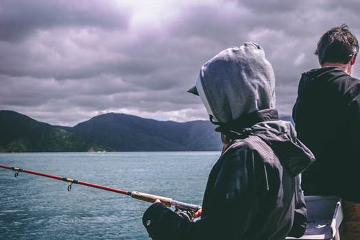
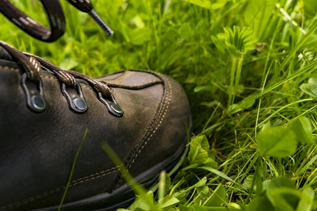
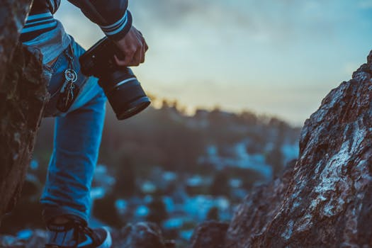

Stressing? why not enjoy a day with relaxing an time for yourself by enjoying on of Cape Towns top fishing places?
Here is a look into Cape Towns top fishing sites
- False Bay: bluefin and yellowfin tuna.
- Rooikrans: blacktail, hottentot, kob (kabeljou) and galjoen.
- Kommetjie Bay: white steenbras, stumpnose and galjoen from shore; tuna and albacore by boat.
- Hout Bay: snoek, tuna and crayfish.
- Melkbosstrand: steenbras, kob and blacktail

Camping is the best way to get in touch with nature.
Here are some of our best camping spots to hit Cape Town for the year of 2018
Have A LOOK!!!

If excercing an being one with nature then this is the hottest trails to hit Cape Town this Year of 2018!!!
Dont miss out on Cape Towns best!!!

Ever wanted to feel like a kid again? Heres your opportunity to do just this!!!
Have a look an let the Adventure Start Today!!!